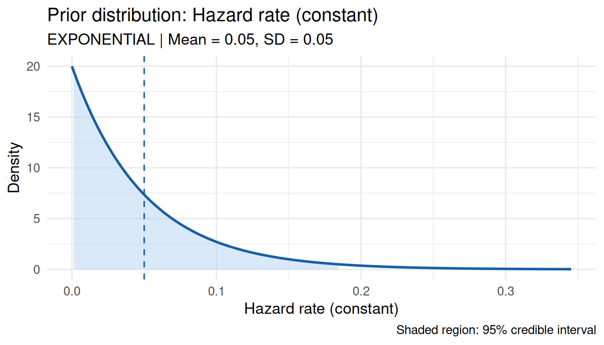
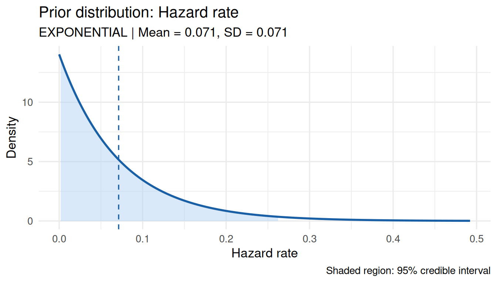
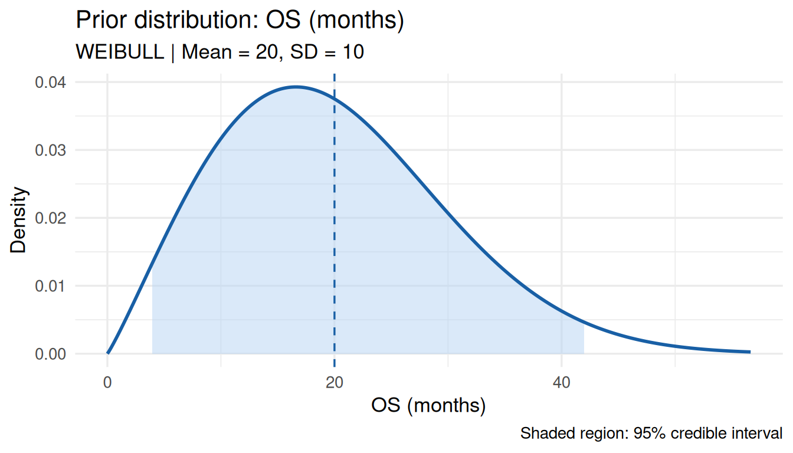
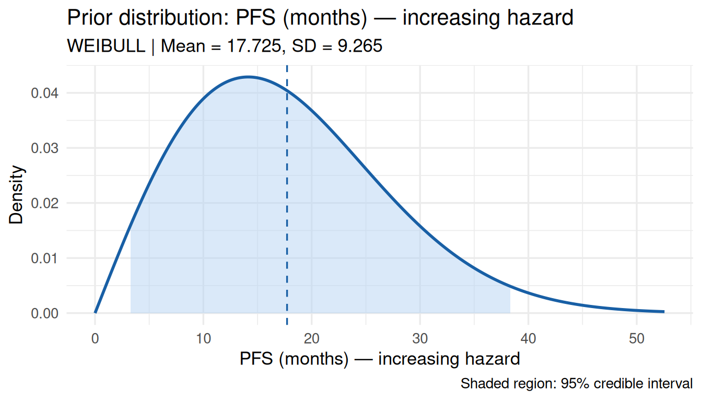
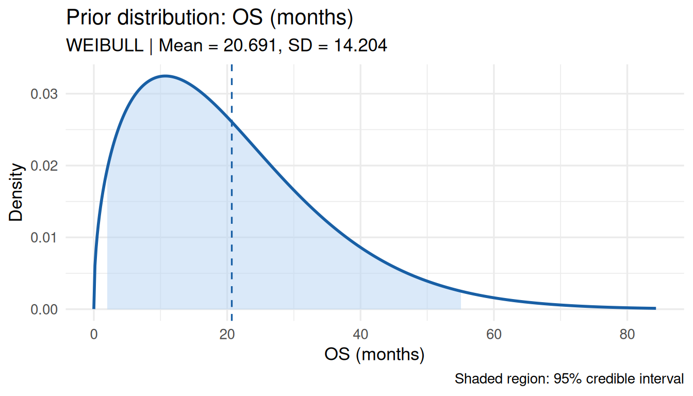

prior_q <- elicit_beta(
quantiles = c("0.05" = 0.10, "0.50" = 0.30, "0.95" = 0.60),
expert_id = "Expert_1",
label = "ORR (treatment arm)"
)
print(prior_q)
plot(prior_q)
Prior elicitation translates an expert’s subjective beliefs about an unknown quantity into a formal probability distribution. bayprior implements the SHELF methodology (O’Hagan et al., 2006) across six distribution families and three elicitation methods.
| Family | Support | Typical quantity |
|---|---|---|
| Beta | (0, 1) | Response rates, proportions |
| Normal | (−∞, ∞) | Mean differences, log odds ratios |
| Gamma | (0, ∞) | Event rates, median survival |
| Log-Normal | (0, ∞) | Hazard ratios, PK parameters |
| Exponential | (0, ∞) | Constant hazard rates, Poisson rate priors |
| Weibull | (0, ∞) | Non-constant hazard survival times (OS, PFS) |
prior_q <- elicit_beta(
quantiles = c("0.05" = 0.10, "0.50" = 0.30, "0.95" = 0.60),
expert_id = "Expert_1",
label = "ORR (treatment arm)"
)
print(prior_q)
plot(prior_q)
prior_m <- elicit_beta(
mean = 0.30,
sd = 0.10,
method = "moments",
expert_id = "Expert_1",
label = "ORR (treatment arm)"
)
print(prior_m)Moment matching solves analytically: \[\alpha = \mu \left(\frac{\mu(1-\mu)}{\sigma^2} - 1\right), \quad \beta = (1-\mu)\left(\frac{\mu(1-\mu)}{\sigma^2} - 1\right)\]
prior_lor <- elicit_normal(
quantiles = c("0.025" = -0.50, "0.50" = 0.20, "0.975" = 0.90),
label = "Log odds ratio"
)
plot(prior_lor)
prior_md <- elicit_normal(
mean = 0.0, sd = 0.5, method = "moments",
label = "Mean difference (sceptical)"
)
plot(prior_md)
The Gamma distribution is the conjugate prior for Poisson and exponential likelihoods — a natural choice for event rate priors.
prior_os <- elicit_gamma(
mean = 18, sd = 6, method = "moments",
label = "Median OS (months)"
)
plot(prior_os)
prior_rate <- elicit_gamma(
quantiles = c("0.10" = 2, "0.50" = 5, "0.90" = 10),
label = "Event rate (per 100 patient-years)"
)
print(prior_rate)\[\text{mean} = \frac{\text{shape}}{\text{rate}}, \quad \text{SD} = \frac{\sqrt{\text{shape}}}{\text{rate}}\]
prior_hr <- elicit_lognormal(
quantiles = c("0.05" = 0.40, "0.50" = 0.70, "0.95" = 1.20),
label = "Hazard ratio (treatment vs control)"
)
plot(prior_hr)
prior_pk <- elicit_lognormal(
mean = 25, sd = 10, method = "moments",
label = "AUC (ng/mL*h)"
)
print(prior_pk)The Exponential distribution models a constant hazard rate \(\lambda > 0\). The mean is \(1/\lambda\) and the SD equals the mean. It is the conjugate prior likelihood for Gamma priors on Poisson rates, and is appropriate when the hazard rate is assumed constant over time.
Use cases: adverse event rates (events per person-time), constant-hazard survival endpoints, Poisson rate priors for count data.
# Mean hazard rate 0.05 => mean survival 1/0.05 = 20 months
prior_hz <- elicit_exponential(
mean = 0.05,
method = "moments",
label = "Hazard rate (constant)",
expert_id = "Expert_1"
)
print(prior_hz)
plot(prior_hz)
Direct rate specification (= \(\lambda\)):
prior_ae <- elicit_exponential(
rate = 0.12,
method = "rate",
label = "AE rate per person-year"
)
print(prior_ae)Fit the rate from expert-specified quantiles:
prior_hz_q <- elicit_exponential(
quantiles = c("0.25" = 0.02, "0.50" = 0.05, "0.75" = 0.10),
method = "quantile",
label = "Hazard rate"
)
print(prior_hz_q)
plot(prior_hz_q)
With Poisson/survival data:
\[\text{Prior: Exponential}(\lambda) \approx \text{Gamma}(1, \lambda)\] \[\text{Posterior: Gamma}(1 + x,\; \lambda + n)\]
where \(x\) = observed events, \(n\) = exposure time or follow-up.
The Weibull distribution is the most widely used model for survival analysis. It is parameterised by shape \(k > 0\) and scale \(\lambda > 0\):
\[\text{mean} = \lambda\,\Gamma(1 + 1/k), \quad \text{SD} = \lambda\sqrt{\Gamma(1 + 2/k) - \Gamma(1 + 1/k)^2}\]
Shape parameter interpretation:
| Shape \(k\) | Hazard | Clinical scenario |
|---|---|---|
| \(k < 1\) | Decreasing | Early frailty, selection |
| \(k = 1\) | Constant | Equivalent to Exponential |
| \(k > 1\) | Increasing | Ageing, post-surgical deterioration |
Specify prior mean and SD — bayprior solves for shape and scale via Nelder-Mead optimisation:
prior_wb <- elicit_weibull(
mean = 20,
sd = 10,
method = "moments",
label = "OS (months)",
expert_id = "Expert_1"
)
print(prior_wb)
plot(prior_wb)
Direct shape and scale specification:
# k=2: linearly increasing hazard
prior_wb2 <- elicit_weibull(
shape = 2,
scale = 20,
method = "params",
label = "PFS (months) — increasing hazard"
)
print(prior_wb2)
plot(prior_wb2)
prior_wb3 <- elicit_weibull(
quantiles = c("0.10" = 5, "0.50" = 18, "0.90" = 40),
method = "quantile",
label = "OS (months)"
)
print(prior_wb3)
plot(prior_wb3)
The Weibull distribution does not have a closed-form conjugate prior. When used in prior_conflict() or sensitivity_grid(), bayprior applies a Normal approximation to the posterior matched to the Weibull’s fit_summary moments.
The interactive chip-allocation method for clinical experts unfamiliar with probability distributions. In the Shiny app this is fully interactive; programmatically:
prior_rou <- elicit_roulette(
chips = c(0L, 1L, 3L, 7L, 9L, 7L, 4L, 2L, 1L, 1L),
breaks = seq(0, 1, by = 0.1),
family = "beta",
label = "Response rate"
)
print(prior_rou)
plot(prior_rou)
e1 <- elicit_beta(mean = 0.25, sd = 0.08, method = "moments",
expert_id = "Oncologist_1", label = "ORR")
e2 <- elicit_beta(mean = 0.35, sd = 0.10, method = "moments",
expert_id = "Oncologist_2", label = "ORR")
e3 <- elicit_beta(
quantiles = c("0.10" = 0.15, "0.50" = 0.30, "0.90" = 0.52),
expert_id = "Statistician", label = "ORR"
)
consensus <- aggregate_experts(
priors = list(Oncologist_1 = e1, Oncologist_2 = e2, Statistician = e3),
weights = c(0.40, 0.35, 0.25),
method = "linear"
)
plot(consensus)
bayprior validates compatibility before pooling. Priors with incompatible supports (e.g. Beta + Normal) are blocked with an error. Same-support cross-family pooling (e.g. Gamma + Exponential) proceeds with a warning noting that sensitivity analysis will use the dominant component’s parameters.
# Same positive support — allowed (Gamma + Exponential)
g1 <- elicit_gamma(mean = 5, sd = 2, method = "moments",
expert_id = "E1", label = "Rate")
exp1 <- elicit_exponential(mean = 0.2, method = "moments",
expert_id = "E2", label = "Rate")
pool_pos <- aggregate_experts(
priors = list(E1 = g1, E2 = exp1),
weights = c(0.5, 0.5)
)
print(pool_pos)All elicit_*() functions return a "bayprior" S3 object:
str(prior_q, max.level = 1)List of 7
$ dist : chr "beta"
$ params :List of 2
$ method : chr "quantile"
$ expert_id : chr "Expert_1"
$ label : chr "ORR (treatment arm)"
$ input :List of 1
$ fit_summary:List of 5
- attr(*, "class")= chr "bayprior"| Slot | Content |
|---|---|
$dist |
Family: "beta", "normal", "gamma", "lognormal", "exponential", "weibull", "mixture" |
$params |
Named list of fitted hyperparameters |
$fit_summary |
mean, sd, q025, q500, q975 |
$method |
Elicitation method |
$expert_id |
Expert identifier |
$label |
Quantity label |